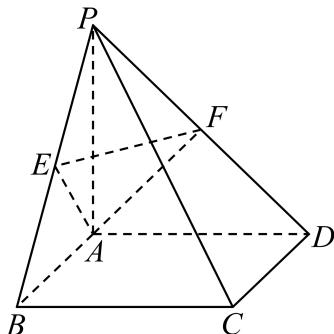
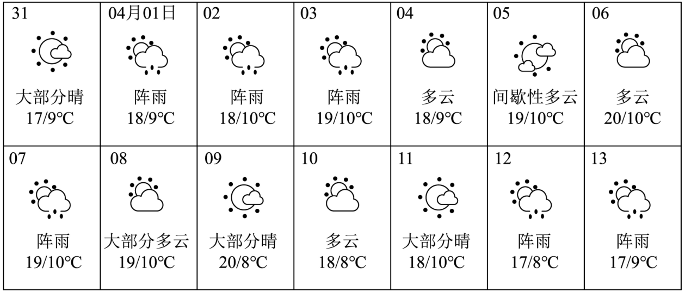

填空题
按本区原卷题号顺序排列。
崇明 · 第1题 ★☆☆☆☆ · 教师预估
不等式 ∣x−1∣<2 的解集为
崇明 · 第2题 ★☆☆☆☆ · 教师预估
本题资料或解析有待核事项，预览不可作为已审定成品。
已知复数 Z = 1 − 2i（ i 为虚数单位），则 z =
崇明 · 第3题 ★☆☆☆☆ · 教师预估
已知全集U = R，集合 A={1,2,4},B={2,4,5} ，则 A∩∁UB=
崇明 · 第4题 ★☆☆☆☆ · 教师预估
求直线x = −2与直线 3x−y+1=0 的夹角为 .
崇明 · 第5题 ★☆☆☆☆ · 教师预估
已知 ∣a=(1,0),b=(2,1) ，则 ∣a+2b∣=
崇明 · 第6题 ★☆☆☆☆ · 教师预估
函数 y=2sin(ωx−16π)（ω>0）的最小正周期是 π，则 ω=______。
崇明 · 第7题 ★★☆☆☆ · 教师预估
某次数学考试后，随机选取14位学生的成绩，得到如下茎叶图，其中个数部分作为“叶”，百位数和十位数作为“茎”，若该组数据的第25百分位数是87，则x的值为
7891011125210153349x769
崇明 · 第8题 ★★☆☆☆ · 教师预估
在 △ABCF 中，若 ic=3,C=3π ，其面积为 3, ，则a + b =
崇明 · 第9题 ★★☆☆☆ · 教师预估
若 (x+1)10=a0+a1(x−1)+a2(x−1)2+⋯+a10(x−1)10 ，则 a0+a1+a2+⋯+a10=
崇明 · 第10题 ★★★☆☆ · 教师预估
本题资料或解析有待核事项，预览不可作为已审定成品。
已知 f(x)={−x2+ax,x≤1ax−1,x>1 ，若函数 y=f(x) 有两个极值点，则实数a的取值范围是
崇明 · 第11题 ★★★☆☆ · 教师预估
本题资料或解析有待核事项，预览不可作为已审定成品。
已知双曲线 x2−b2y2=1(b>0) 的左、右焦点为 F1,F2 ，以O为顶点， F2 为焦点作抛物线交双曲线于P，且 ∠PF1F2=45∘ ，则 ∣b2=∣
崇明 · 第12题 ★★★☆☆ · 教师预估
本题资料或解析有待核事项，预览不可作为已审定成品。
已知集合M中的任一个元素都是整数，当存在整数 a,c∈M,b∈/M 且 a<b< c时，称M为“间断整数集”．集合 {x∣1≤x≤10,x∈Z} 的所有子集中，是“间断整数集”的个数为
选择题
按本区原卷题号顺序排列。
崇明 · 第13题 ★★☆☆☆ · 教师预估
若a >b>0,c>d, ，则下列结论正确的是（ ）
A. a−b<0
B. ac>bd
C. ac2>bc2
D. c2+1a>c2+1b
崇明 · 第14题 ★☆☆☆☆ · 教师预估
已知一个圆锥的轴截面是边长为2的等边三角形，则这个圆锥的侧面积为（ ）
A. 2π
B. 3π
C. 4π
D. 33π
崇明 · 第15题 ★★★☆☆ · 教师预估
本题资料或解析有待核事项，预览不可作为已审定成品。
抛掷一枚质地均匀的硬币n次（其中n为大于等于2的整数），设事件A表示“n次中既有正面朝上又有反面朝上”，事件B表示“n次中至多有一次正面朝上”，若事件A与事件B是独立的，则n的值为（ ）
A. 5
B. 4
C. 3
D. 2
崇明 · 第16题 ★★★★☆ · 教师预估
本题资料或解析有待核事项，预览不可作为已审定成品。
数列 {an} 是等差数列，周期数列 {bn} 满足 bn=cos(an)。若集合 X={x∣x=bn, n 是正整数} 中恰有三个元素，则数列 {bn} 的周期 T 的取值不可能是（ ）。
A. 4
B. 5
C. 6
D. 7
解答题
按本区原卷题号顺序排列。
崇明 · 第17题 ★★★☆☆ · 教师预估
如图，在四棱锥 P−ABCD 中，底面ABCD是边长为2的正方形，且 CB⊥BP,CD⊥DP PA=2 ，点E，F分别为PB，PD的中点.

(1) (6分)求证： PA⊥ 平面ABCD；
(2) (8分)求点P到平面AEF的距离.
崇明 · 第18题 ★★★☆☆ · 教师预估
已知 ∣f(x)=log3(x+a)+log3(6−x)
(1) (6分)是否存在实数a，使得函数 y=f(x) 是偶函数？若存在，求实数a的值，若不存在，请说明理由；
(2) (8分)若a > −3且 .a=0 ，解关于x的不等式 f(x)≤f(6−x)
崇明 · 第19题 ★★★☆☆ · 教师预估
本题资料或解析有待核事项，预览不可作为已审定成品。
某区2025年3月31日至4月13日的天气预报如图所示。

(1)（4分）从3月31日至4月13日某天开始，连续统计三天，求这三天中至少有两天是阵雨的概率；
(2)（4分）根据天气预报，该区4月14日的最低气温是 9∘C。温差是指一段时间内最高温度与最低温度之间的差值，例如3月31日的最高温度为 17∘C，最低温度为 9∘C，当天的温差为 8∘C。记4月1日至4日这4天温差的方差为 s12，4月11日至14日这4天温差的方差为 s22。若 s22=34s12，求4月14日天气预报的最高气温；
(3)（6分）从3月31日至4月13日中随机抽取两天，用 X 表示一天温差不高于 9∘C 的天数，求 X 的分布列及期望。
崇明 · 第20题 ★★★★☆ · 教师预估
本题资料或解析有待核事项，预览不可作为已审定成品。
已知抛物线Γ: x2=4y, ，过点 P(a,b) 的直线l与抛物线Γ交于点A、B，与y轴交于点C

(1) (4分)若点A位于第一象限，且点A到抛物线Γ的焦点的距离等于3，求点A的坐标；
(2) (6分)若点A坐标为(4,4)，且点B恰为线段AC的中点，求原点O到直线l的距离；
(3) (8分)若抛物线Γ上存在定点D使得满足题意的点A、B都有 DA⊥DB ，求a、b满足的关系式
崇明 · 第21题 ★★★★★ · 教师预估
本题资料或解析有待核事项，预览不可作为已审定成品。
已知函数 (y=f(x) ，P为坐标平面上一点．若函数 ⋅y=f(x) 的图像上存在与P不同的一点Q，使得直线PQ是函数y = f(x)在点Q处的切线，则称点P具有性质 Mf
(1) (4分)若 f(x)=x2 ，判断点 P(1,0) 是否具有性质 Mf ，并说明理由；
(2) (6分)若 f(x)=2x3−4x2+2x ，证明：线段 x=21(−1≤y≤1) 上的所有点均具有性质 Mf ；
(3) (8分)若 f(x)=ex ，证明：“点 P(x,y) 具有性质 Mf′ ”的充要条件是 6y<ex,